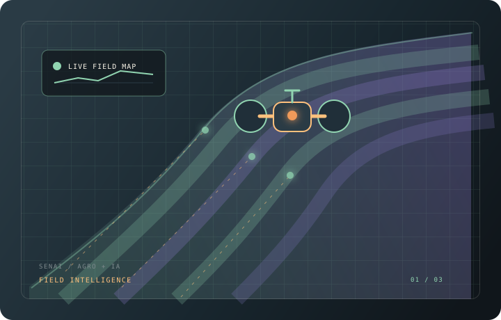
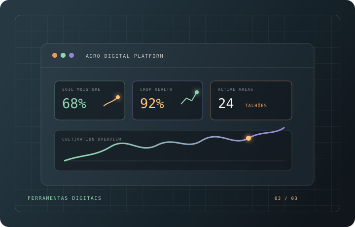
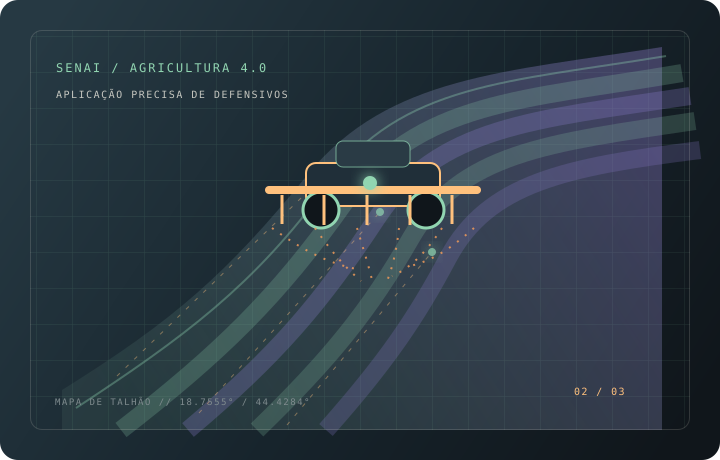

em desenvolvimento
Desenvolvimento
Fundamentos para construir páginas e soluções web.
navegue pelas abas
CURVELO — BRASIL
um pouco da minha perspectiva
Com o tempo, a área de tecnologia se tornou algo interessante para mim e uma forma de aprender coisas novas.
Nasci em Curvelo, Minas Gerais, e estudo na Escola Irmã Raimunda Marques. Atualmente estou cursando Técnico em Desenvolvimento de Sistemas.
Atualmente curso Técnico em Desenvolvimento de Sistemas e gosto de explorar novas ferramentas. Também estou cursando no SENAI a formação de Ferramentas digitais e plataformas de IA para o agro, que aborda possibilidades da tecnologia no agronegócio. Tenho conhecimento básico em impressão 3D, mas sei trabalhar com diferentes recursos e possibilidades da área.
Também já participei, junto com minha turma, de um projeto da Liga STEAM, experiência que ampliou meu interesse por tecnologia e por atividades práticas.
Apesar desse interesse, meu principal foco profissional é me preparar para atuar como operador de máquinas agrícolas.
o que estou desenvolvendo
Fundamentos para construir páginas e soluções web.
Recursos que apoiam organização, prototipação e código.
Temas que fazem parte da minha formação técnica.
formação complementar / SENAI
Curso ainda em andamento sobre ferramentas digitais e possibilidades de uso da inteligência artificial no agronegócio.
a base continua crescendo
Conhecimento é um projeto sem versão final. Esta é a etapa atual da minha jornada.


formação técnica
Escola Irmã Raimunda Marques
Formação em desenvolvimento web, banco de dados, lógica de programação, engenharia de software e projetos práticos.
formação complementar
SENAI
Formação voltada ao uso preciso e responsável de tecnologias na aplicação de defensivos agrícolas.

formação complementar
SENAI
Ainda estou cursando esta formação, que aborda ferramentas digitais e plataformas de inteligência artificial aplicadas ao agronegócio.
Tem uma ideia, oportunidade ou quer trocar experiências? Estou à disposição para conversar.